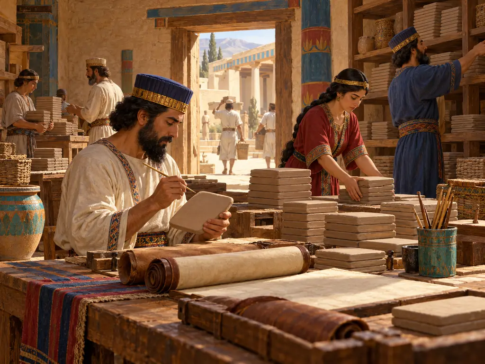
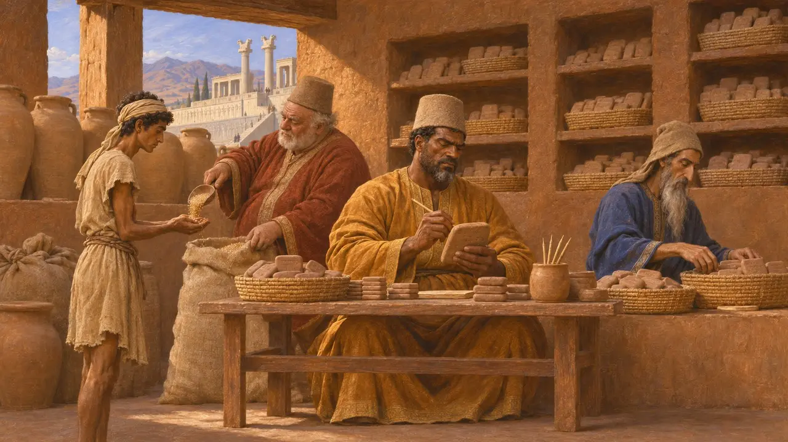
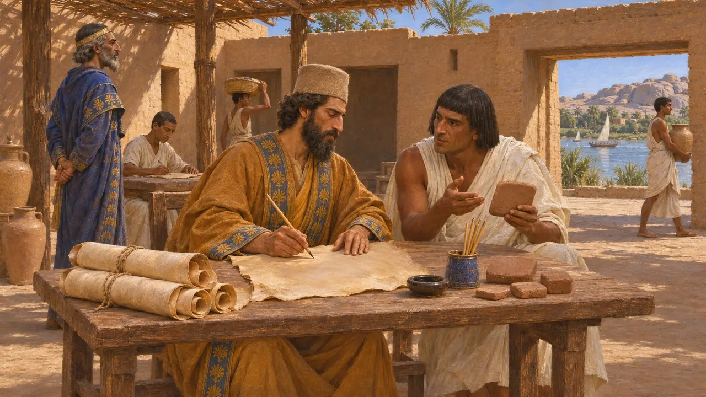
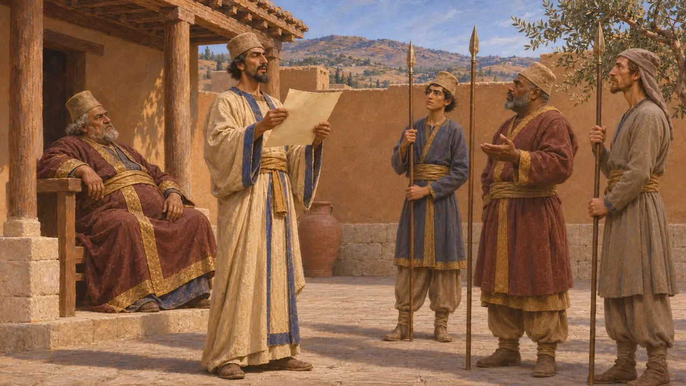
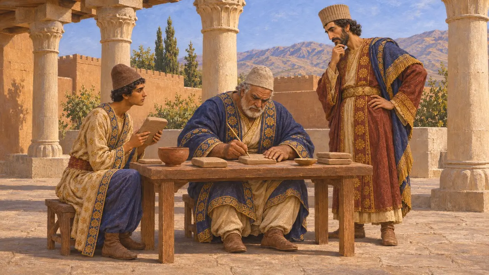

The royal scribes
Writers and record-keepers of the Achaemenid administration, 6th-5th century BCE
In the game: Level 4: The Terrace
Royal scribes wrote, copied, translated and read aloud the documents that held the Persian empire together. At Persepolis they kept accounts of grain, wine, livestock and workers on clay tablets in Elamite, and probably also on leather in Aramaic. Much of what is known about daily life in the King's service comes from the records they left.
In the game: The game shows the scribes through the Scribal Office building and tablets of the Persepolis archive. That archive covers only 509 to 493; records of this kind from other years are lost.

The Persepolis Fortification archive
In the recordIn 1933-34 excavators found many thousands of clay tablets and fragments in the fortification wall of Persepolis. They date from 509 to 493, Darius's 13th to 28th years, and most are written in Elamite. They record rations for workers and officials, travel provisions, animals and stores. Scribes themselves appear among those receiving rations.
R. Hallock, Persepolis Fortification Tablets, 1969

Clay, leather and many languages
In the recordSome Elamite tablets mention scribes writing on parchment, which most scholars take to mean Aramaic documents on leather that have perished. Hundreds of Aramaic tablets also survive in the archive. Aramaic served as the common written language across the empire. An Aramaic copy of Darius's Behistun text, made late in the 5th century, was found at Elephantine in Egypt, which shows royal texts being translated and sent to distant provinces.
Elephantine papyri (Aramaic version of DB); P. Briant, From Cyrus to Alexander, 2002

Scribes beside governors and kings
Ancient accountHerodotus says every Persian governor kept a royal scribe. In his story of Bagaeus and the disobedient governor Oroetes, the scribe read the King's letters aloud to the guards, who then obeyed them. He also says that at Salamis Xerxes had scribes write down the names of captains who fought well, with their fathers and cities.
Herodotus 3.128; Herodotus 8.90

Who created Old Persian writing
DisputedIn the Behistun inscription Darius says he made a new form of writing. Many historians think the Old Persian cuneiform script was devised by his scribes at this time, so the short texts naming Cyrus at Pasargadae would have been added later. Others read the passage more narrowly and argue the script may be older. The question is still debated.
DB §70; P. Briant, From Cyrus to Alexander, 2002
Sources
- R. Hallock, Persepolis Fortification Tablets, 1969
- Herodotus 3.128
- DB §70
- P. Briant, From Cyrus to Alexander, 2002
- Herodotus 8.90
- Elephantine papyri (Aramaic version of DB)